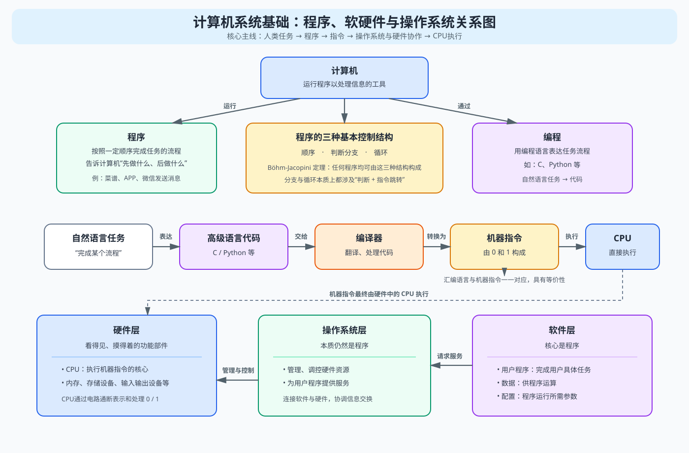

前置基础I
计算机领域的实验(Lab)最有意思的地方在于，它允许你用代码，亲手造出来一个简化版的真实的“计算机”这个复杂系统中实现功能的一部分。
就从计算机系统基础II这门课程的纲领开始吧——
计算机与程序(Program)
我们知道，计算机是运行程序以处理信息的工具。
而所谓程序，是按照一定顺序完成任务的流程，步骤。简言之，就是先做什么，后做什么。
编程就是告诉计算机，先做什么、后做什么。
生活中处处都是程序，比如说，菜谱就是程序，每一个步骤就是一个指令。
###西红柿炒鸡蛋程序
1、准备食材
2、炒鸡蛋
3、盛出鸡蛋
4、炒西红柿
5、等待西红柿出汁
6、倒入鸡蛋
7、翻炒均匀
8、装盘
再比如说，我们日常所说的应用软件(APP) ，其运作的核心，也是程序。
例子：这是一段“微信发送消息”时候，计算机所运行的程序的自然语言版本。

你会发现一切程序或者说流程，有且仅有三个模块构成：顺序、判断分支、和循环(这一定理被称为：Böhm-Jacopini定理，于1966年被计算机科学家Corrado Böhm和Giuseppe Jacopini证明)。
- 顺序就是，12345依次执行指令。
- 判断分支就是，A情况跳转到去做1指令，B情况跳转到去做2指令。(if...else)
- 循环就是，重复做指令，做完一段指令之后跳转回到指令的开头。(while...)(for...)
所以也可以将流程归纳为，顺序+判断+跳转
那么我们说回，计算机，它只靠通电就能运作，应该只能“感受”到，有电(1)，没电(0)，两种状态，他背后是怎么理解和执行我们复杂的程序的呢？
我们需要拆开一台计算机来看看，里面有什么……
计算机的组成部件
计算机构成部分大概可以分为两个层次：硬件和软件。
1️⃣计算机的硬件层次
硬件层大概由这几类功能部件组成，都是看的见，摸得着的：
其中最为核心的是：CPU，它是执行程序的机器指令的工具。
(如图是一块CPU，金色的点是“引脚”或者触点)
机器指令你还记得吗？就是机器(CPU)能直接理解的理解、执行的指令。又由于，我们说，机器能做到的，不过是，感知电路通断的0和1。所以机器指令实际上，就是一串由0和1构成的数字。
在《hello.c的一生》中，我们知道了，我们用C语言或者Python语言写成的代码指令，借助编译器一系列复杂的处理之下，就可以转化为机器指令，从而，我们实现了自然语言-代码语言-机器指令的转化过程，也成功将我们的任务交给了计算机来处理。
我们可以用一个简单的例子，回顾熟悉这个过程。
首先，这是用自然语言告诉机器执行的流程步骤。
用C语言表达出来同样的意思大概是这样：
经过编译器自动处理，会变成：
左侧就是机器指令(十六进制的表示，因为二进制位数太长了不方便)
右侧汇编语言。(汇编语言和机器指令具有一一对应的关系)
(由于这种一一对应关系，汇编语言和机器指令具有等价性)
你还记得十六进制怎么对应二进制的吗？展开就是这样
这下，CPU看到这段代码之后，控制计算机内部电路的通(1)，断(0)。
就把你的代码中的任务，完成了。
说到这，你大概理解了计算机硬件中最重要的部分，比较具体，对吧？接下来进入一个看不见摸不着的、抽象一点的层次——软件
2️⃣计算机的软件层次
同样的，我们用一幅图，来表示软件的组成部件。包括数据&配置和程序两个部分
数据呢，是程序要用来做运算的数据。
配置呢，是程序运行要用的参数
所以他们都服务与同一个核心——程序
所以软件层次的介绍，就一句话：
软件的核心是程序
那这软件和硬件，总不能独立工作啊？软件的每一条指令都需要CPU、等等的硬件来执行。
所以还需要有一个能连接、交换这两个层次、以及硬件与之间的信息的东西啊？
那硬件是死的，不可能长出触手。软件是活的啊，软件的本质就是程序，多写几条程序，让CPU通过这些程序来调控、管理硬件吧——这就是操作系统。
操作系统的本质还是程序
这么多程序，那我们把程序分分类吧。
一部分是负责完成用户的具体任务的，叫做用户程序
另一部分是负责管理硬件，服务于用户程序的，叫做操作系统程序
有时候，我们也把操作系统归为硬件和软件之间的层次，“操作系统层次”，因为它连接了软件和硬件。
总结
我们用一张图来总结和回顾一下今天的所有知识把
好的，那么，有了这些前置的基础知识，我们就可以进一步深入计算机系统基础II的学习了

引子
我们知道了程序的本质是流程，它在CPU眼里就是一条一条机器指令的序列。
我们会在用户程序中用C语言的代码，告诉CPU，请你按照……这个步骤做事情。
再补充一个定义吧。一个听着吓人，实际上，很简单的东西——
函数
函数是：负责完成一个特定任务的子程序
一个函数大致包含：输入、处理、输出三个部分。
输入的部分，叫做参数。
处理的内部，有流程的控制、有运算。
输出的部分，可以是返回值，可以是状态改变。
- 分析任何一个函数，就是看它❶把什么输入，(❷通过怎么样的处理)，❸输出了什么。
- 了解一个函数的用法，就是忽略处理的机制，只讲输入什么，输出什么。